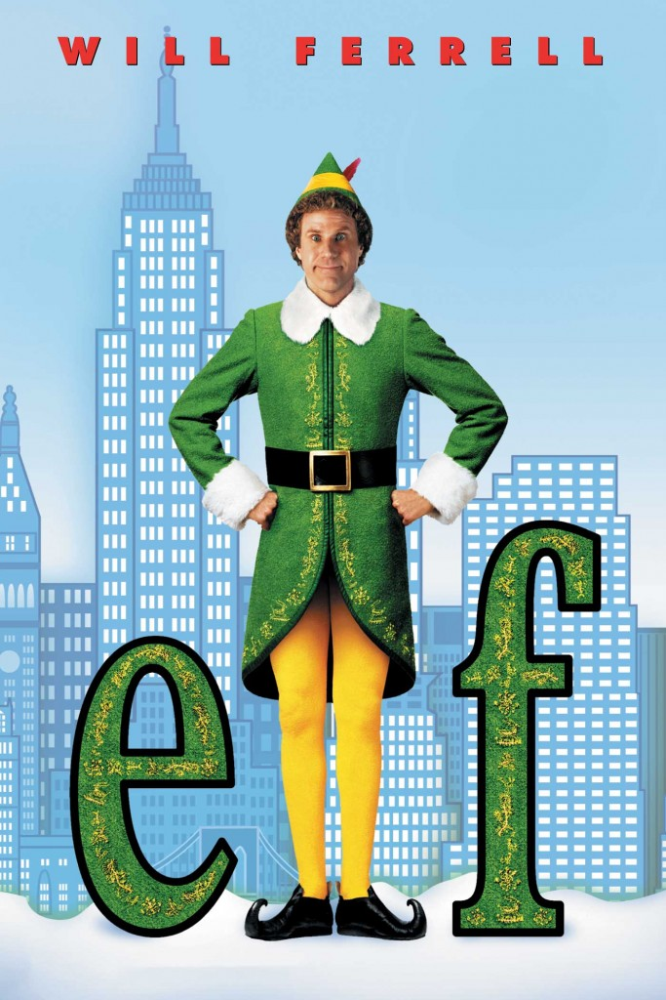

Mark your calendar, great films never die
Experience the majesty of these movies, released again to be seen as they were always meant to: on the silver screen. Relive the memories of seing these films as you once saw, or find a new appreciation in a chance to see these movies in their truest form.
- Synopsis:
- Will Ferrell's classic character, Buddy the Elf, returns again to celebrate Elf's 20th anniversary. The film, released originally in 2003, follows the exploits of Buddy, one of Santa's elves who is actually a human, in his journey to reconnect with his biological father. It can't all be candy canes and gingerbread though, because Buddy's father is on Santa's naughty list.
- Run time:
- 96 Minutes
- Director(s):
- Jon Favreau
- Genre(s):
- Comedy, Christmas
- Rerelease Date:
- November 26th, 2023
- Distributor:
- New Line Cinema

- Synopsis:
- Rereleasing for its 20th anniversary, Love Actually is an international coproduction between the United States, the United Kingdom, and France. This Christmas movie chronicles the the lives of 8 different couples and their love lives in various loosely-related tales all during a franctic London December.
- Run time:
- 136 Minutes
- Director(s):
- Richard Curtie
- Genre(s):
- Comedy, Drama, Christmas
- Rerelease Date:
- December 8th, 2023
- Distributor:
- Universal Pictures
- Synopsis:
- Back for its 25th anniversary, this gut-wrenching World War 2 drama will keep you glued to your seat every moment. Following the Normandy Landings, a group of U.S. soldiers go behind enemy lines to save the titular Private Ryan, a lone paratrooper whose brothers-in-arms have been killed.
- Run time:
- 170 Minutes
- Director(s):
- Steven Spielburg
- Genre(s):
- Drama, War
- Rerelease Date:
- November 19th, 2023
- Distributor:
- Dreamworks Pictures, Paramount Pictures
- Synopsis:
- The epitome of British humour this low-budget yet hilarious classic returns again after 48.5 years. In this parody of King Arthur's quest, you'll be taken on a surreal quest with many very silly obstacles along the way. This special release is made for fans, as it includes a never before seen interactive quote-along for each and every iconic line.
- Run time:
- 91 Minutes
- Director(s):
- Terry Gilliam, Terry Jones
- Genre(s):
- Adventure, Comedy, Fantasy, British
- Rerelease Date:
- December 3, 2023
- Distributor:
- Trafalgar Releasing

- Synopsis:
- Returning for its 20th Anniversary, this Japanese tragicomedy from legendary director Satoshi Kun is full of humor, heart, and spirit. On a cold Christmas Eve, three homeless companions discover a baby girl in a garbage heap, and they set out to find her parents. All the while, they are haunted by their own pasts and a cast of shadowey characters from Tokyo's night life.
- Run time:
- 92 Minutes
- Director(s):
- Satoshi Kon
- Genre(s):
- Adventure, Comedy, Animation
- Rerelease Date:
- December 11th, 2023
- Distributor:
- Sony Pictures Entertainment Japan